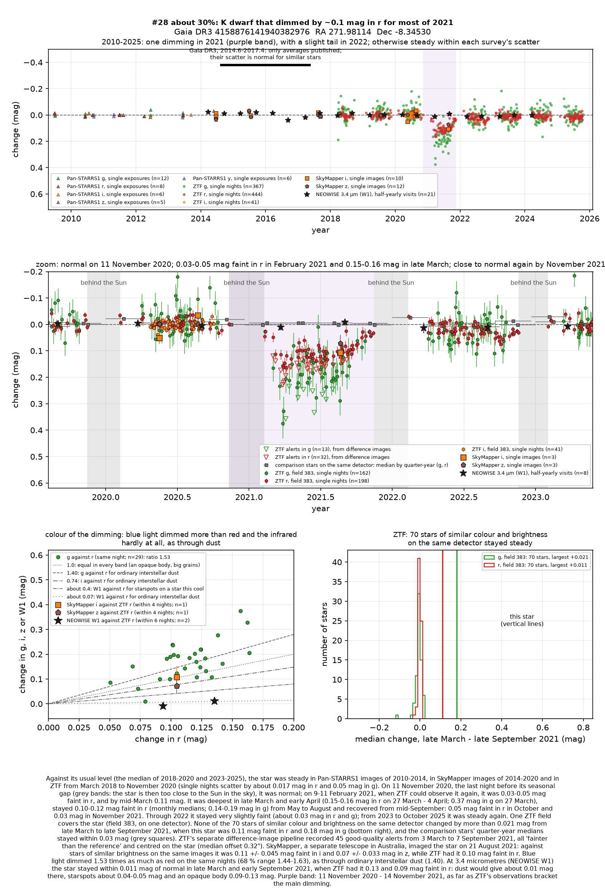
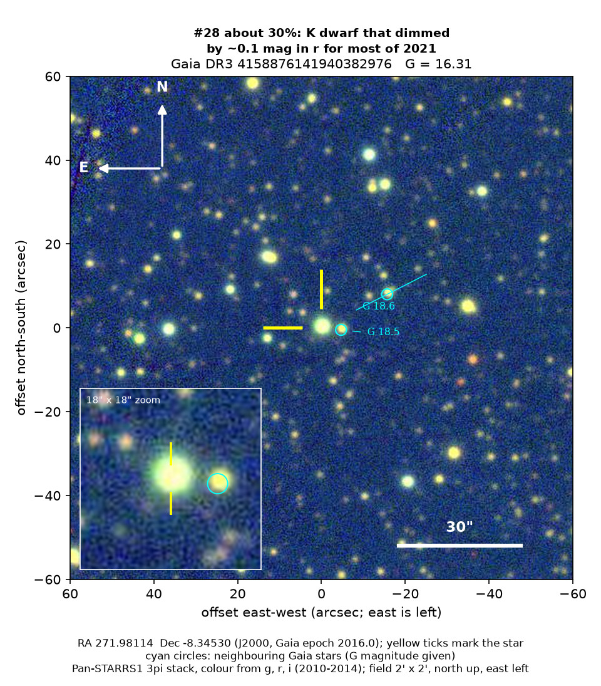
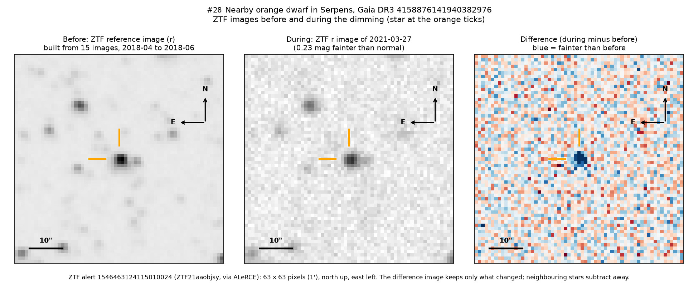

Professor of Mathematics
Paata Ivanisvili
Department of Mathematics, University of California, Irvine

Candidate 28: a nearby orange dwarf that dimmed for most of 2021
Why this estimate. The dimming is almost certainly real: the ZTF survey telescope at Palomar Observatory in California recorded it while 70 stars of similar colour and brightness on the same detector stayed steady, and SkyMapper, a telescope in Australia, caught the star faint too. Its colour fits dust. But only one ZTF detector covered the star, SkyMapper saw it on a single night, the start was hidden, the star shows weak hints of youth, and there is no spectrum.
How to read the pictures. The finder chart shows a patch of sky two arcminutes across, about a fifteenth of the Moon’s width, with north up and east to the left. The star sits between the two yellow ticks, and the white bar is 30 arcseconds long. On a light curve the vertical axis is magnitude, a brightness scale on which larger numbers mean fainter stars, and it is drawn so that down means fainter. Purple shading marks the dimming, and grey shading the months when the star could not be observed. Each survey uses slightly different filters, so each is compared with its own normal level. The ZTF pictures show ZTF’s reference image of the star, an image taken during the dimming, and the difference between the two, in which only what changed remains: blue means fainter and red brighter.

What changed. The star is an orange dwarf, smaller and cooler than the Sun, about 330 parsecs (1,080 light-years) away, seen through the dark dust clouds of the Aquila Rift. It was steady from 2010 until 11 November 2020, just before the Sun’s glare hid it for the winter. When ZTF saw it again, in February 2021, it was slightly faint, and by late March it had lost about 14 per cent of its red light and up to 29 per cent of its green light. It stayed about a tenth fainter in red light until September and was nearly normal by November 2021, apart from a faint tail of about 3 per cent through 2022. ZTF’s alert system, which compares each new image with a reference image, flagged it 45 times, and SkyMapper saw it faint on 21 August 2021.
Why it might matter. Dust passing in front of the star is the likeliest cause. Green light dimmed 1.53 times as much as red: ordinary interstellar dust gives about 1.40, starspots on a star this cool about 1.1 to 1.2, and an opaque body would dim all colours equally. The infrared light, measured twice by NEOWISE during the dimming, did not change, which rules out an opaque body and argues against spots. An eclipse by another star lasts hours or days, not months, and the comparison stars and SkyMapper make an instrumental fault unlikely.
The main alternative is a young star dimmed by dust of its own: the star lies in front of the star-forming clouds of Serpens and Aquila, and Gaia’s spectra hint at weak hydrogen emission. But it moves 9 to 22 km/s differently from the young stars catalogued there, shows no warm dust and sits on the main sequence of ordinary stars, suggesting an age above about 50 million years. A spectrum would settle its type and age.
No record of the dimming could be found. SIMBAD has no entry for the star, Gaia lists no variability, and VSX, the variable-star index, has nothing within 30 arcseconds. It is in none of the variable-star, young-star or cluster catalogues consulted, and there is no Transient Name Server entry, Gaia alert or paper giving its Gaia number. ZTF’s alert system holds only machine-generated classifications for it.
- Star
- Gaia DR3 4158876141940382976, an orange dwarf of spectral type K4 to K5
- Location
- RA 271.98114°, Dec −8.34530° (J2000), in Serpens (Serpens Cauda), 5.7 degrees north of the Milky Way’s mid-plane
- Distance
- about 330 parsecs (1,080 light-years)
- Brightness
- Gaia G = 16.31, far too faint for the eye or a small telescope
- Probability
- This candidate is unconfirmed. The percentage under the title is an estimate of the chance that it is a real, previously unrecorded case of the kind described. The estimate has not been checked by outside experts. See the introduction to all fifty-eight candidates.
- Caveat
- There is no spectrum, and SkyMapper’s confirmation rests on a single night. The hints of youth leave room for a moderately young star with dust of its own. A star on another detector of the same ZTF field, candidate 24, dimmed over nearly the same months; no single cloud could have dimmed both, so this is most likely chance, but a reason for caution.

